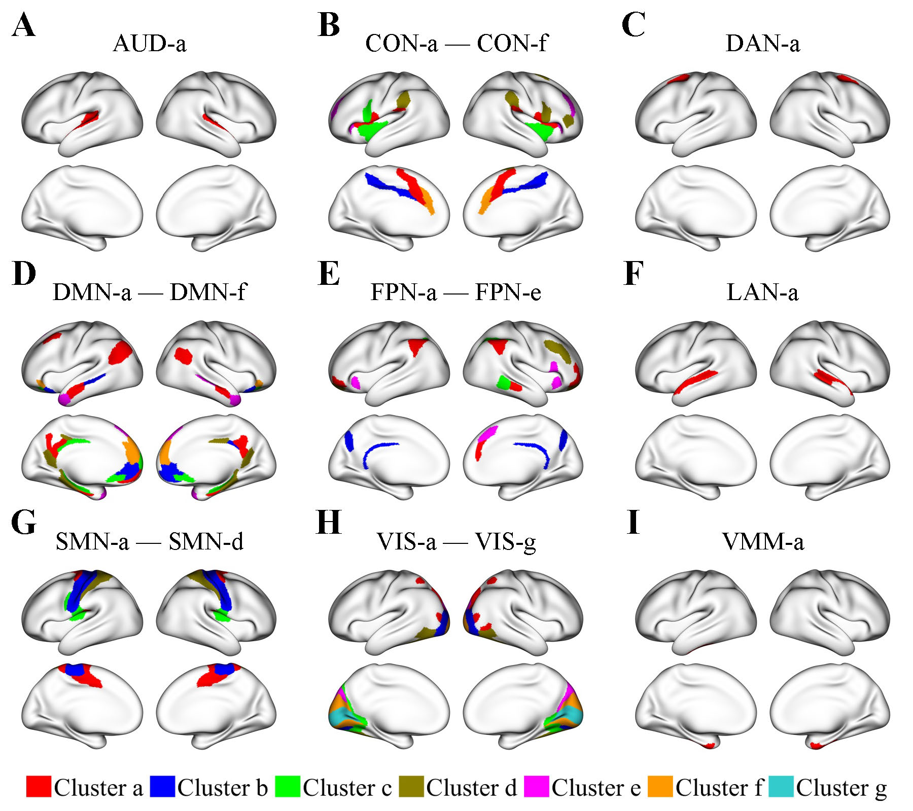
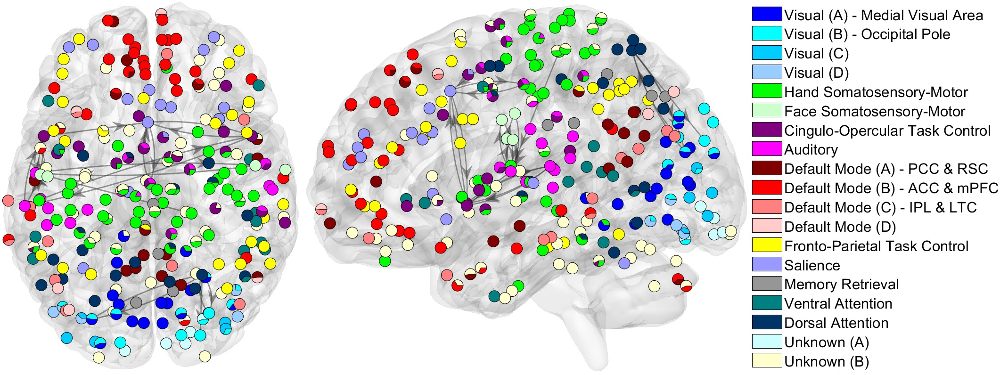

Research
Lifespan Changes in Human Brain Networks
Clusters of regions showing identical lifespan functional connectivity trajectories
Regions within the same cluster exhibit identical patterns of age-related functional connectivity (FC) changes. Regions with identical FC trajectories generally have the same functions. Yet, regions with the same function may have distinct FC trajectories, as evidenced by clustering results showing that large functional networks are typically divided into smaller region clusters. Here, region clusters are displayed in an organized manner according to their respective functional networks: the auditory network (AUD), the cingulo-opercular network (CON), the dorsal attention network (DAN), the default mode network (DMN), the frontoparietal network (FPN), the language network (LAN), the somatomotor network (SMN), the visual network (VIS), and the ventral multimodal network (VMM). Within each functional network, region clusters are shown in different colors and labeled (e.g., a, b, etc.) in descending order according to their number of regions, from the largest to the smallest.
Within-network FC trajectories
Here, in each brain plot, one region cluster is designated as the seed cluster, plotted in black.
The FC trajectory between the seed cluster and a cluster from the same functional network, referred to as cluster B, is displayed in the color assigned to cluster B.
Light cyan and light coral dots in the FC plots represent FC values between a region in the seed cluster and another region in cluster B for individual male and female subjects, respectively.
Dotted lines represent 95% confidence intervals for population-mean FC trajectories of males, whereas dashed lines represent those of females.
Within-network FC generally shows a steady decline with age, especially after age 50.
Between-network FC trajectories
Here, in each brain plot, one region cluster is designated as the seed cluster, plotted in black.
The FC trajectory between the seed cluster and another cluster from a different functional network, referred to as cluster B, is displayed in the color assigned to cluster B.
Light cyan and light coral dots in the FC plots represent FC values between a region in the seed cluster and another region in cluster B for individual male and female subjects, respectively.
Dotted lines represent 95% confidence intervals for population-mean FC trajectories of males, whereas dashed lines represent those of females.
Between-network FC trajectories show diverse patterns, including consistent decreases, inverted U-shapes, consistent increases, and U-shapes.
Within the same functional network, FC with another network can exhibit distinct trajectory patterns.
For example, FC between the CON-c and Aud-a clusters consistently decreases with age, whereas FC between the CON-b and Aud-a clusters increases until around age 80 and then decreases.
Overall, the patterns of between-network FC trajectories are not only network-specific but also dependent on the spatial proximity between brain regions.
High-Dimensional Directed Network Analysis of Focal Epileptic Seizure
The evolution of directed brain networks from preictal (300 seconds before seizure onset) to postictal phases (300 seconds after seizure onset)
Patient 1
The diamond at electrode G37 is the SOZ identified by expert interpretation of EEG data. Nodes in light blue are the regions that did not belong to any clusters. Nodes in the same other colors (either dark blue, green, pink, red, purple, orange or yellow) denote different identified clusters of regions. All nodes in red color belong to the SOZ cluster. Grey arrows indicate the identified directed connections between regions. Anteroinferior electrodes preceded by an “X” were resected in a previous epilepsy surgery.
Patient 2
The diamonds are the SOZ identified by expert interpretation of EEG data. Nodes in light blue are the regions that did not belong to any clusters. Nodes in the same other colors (either dark blue, green, pink, red, purple, orange or yellow) denote different identified clusters of regions. Arrows indicate the identified directed connections between regions.
Whole-Brain Network Analysis of Large-Scale Neuroimaging Data
The population-mean whole-brain directed networks under the resting state
The nodes in the same color are identified to be in the same module. Black edges represent directed connections between modules that have distinct functions. The directed connections selected have top 1% posterior probabilities. Our method revealed several smaller modules in large functional brain systems, such as the visual and the default mode system. We also discovered that the strongest between-module directed connections are between the auditory and somatosensory-motor modules and between the cingulo-opercular task control and salience modules.
